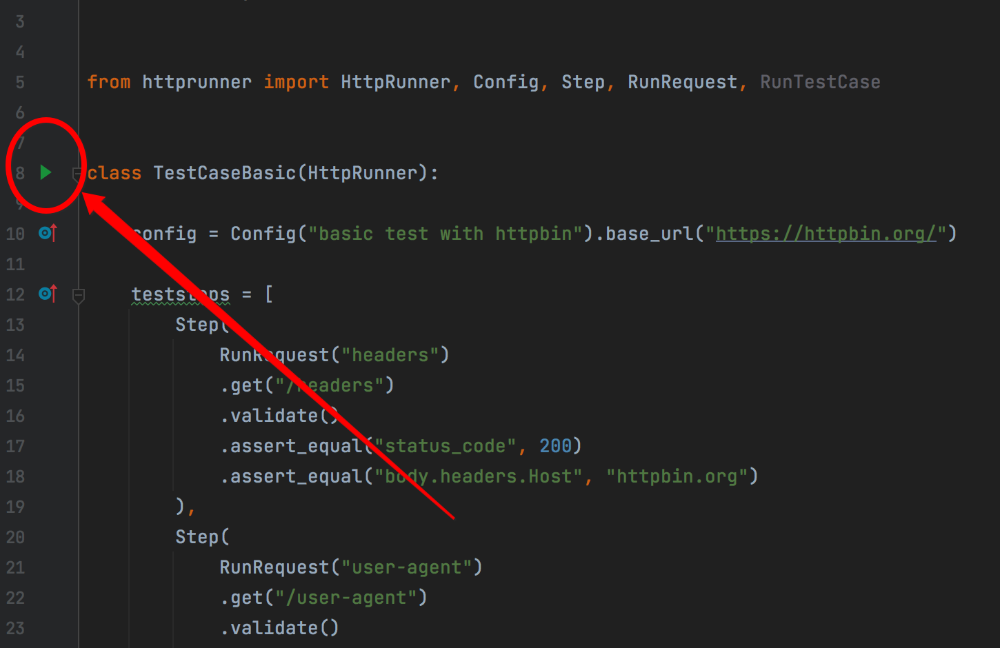
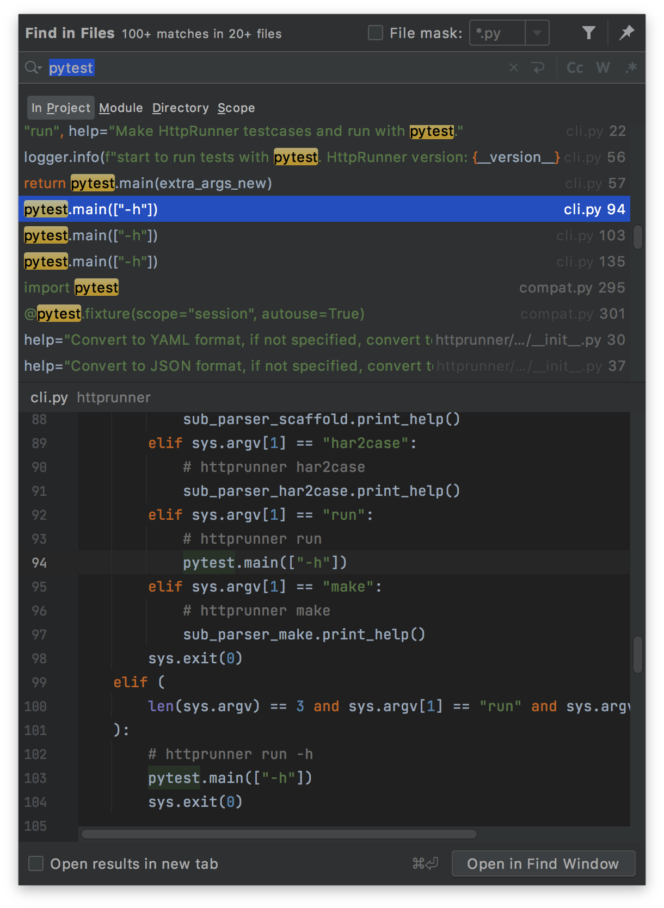
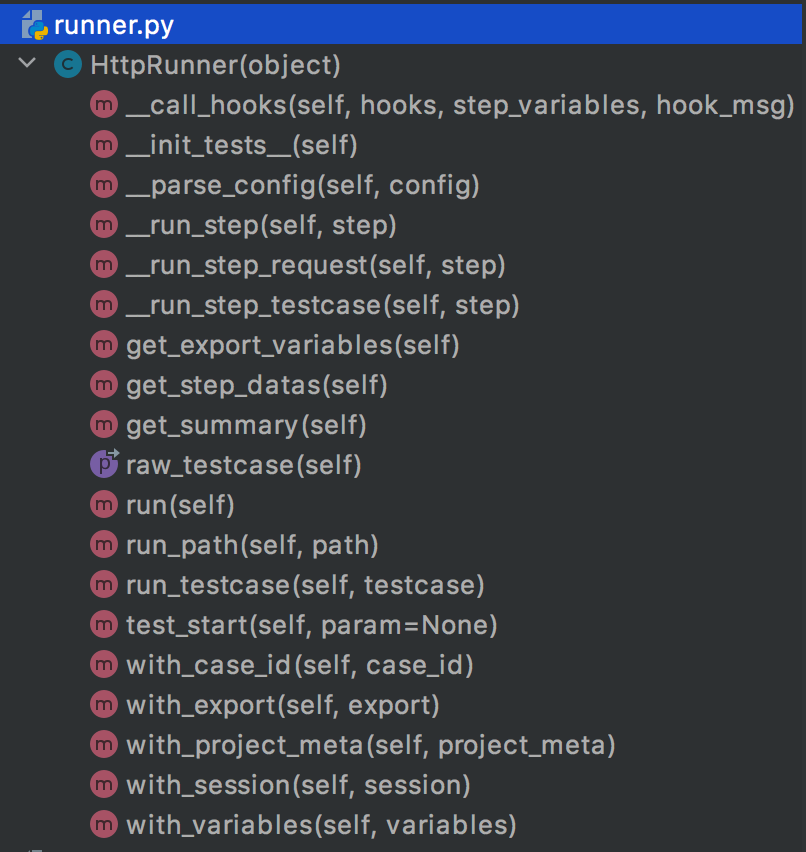
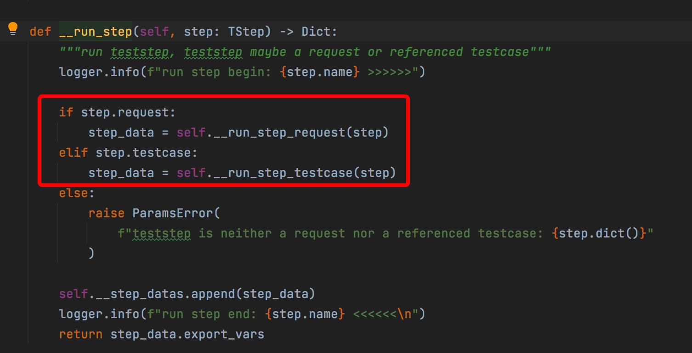
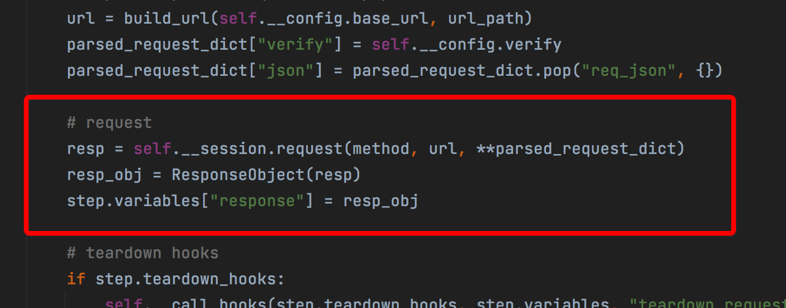
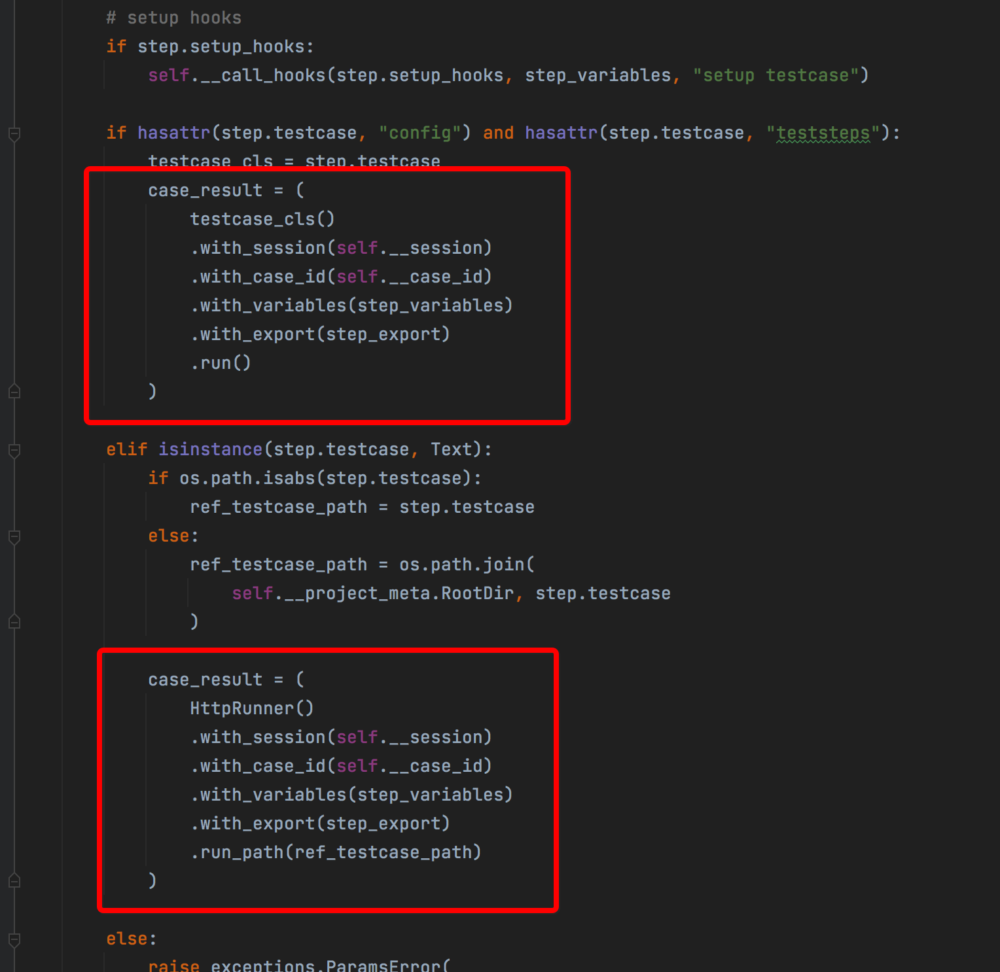
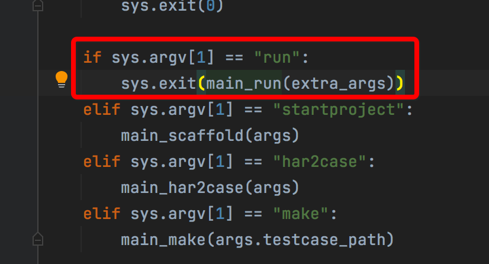
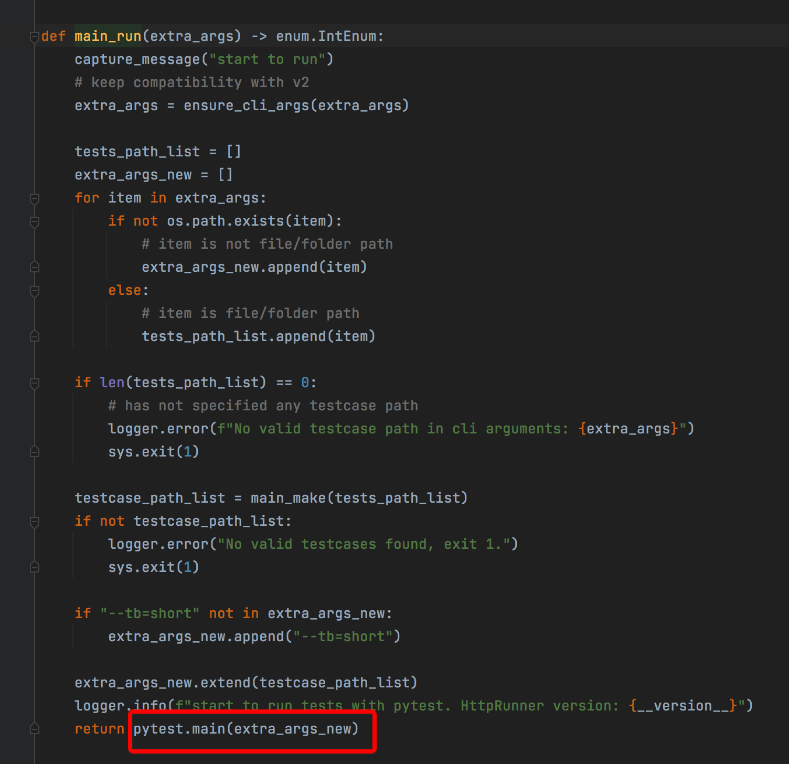

【HttpRunner】HttpRunner3的用例是怎么运行起来的¶

在PyCharm中打开examples/httpbin/basic_test.py：

首先映入眼帘的是左上角那个绿色小箭头，点了一下，可以直接运行，意味着HttpRunner是能够直接被pytest驱动运行的，这可就有点意思了，难道HttpRunner的底层是pytest？带着这个疑问我全局搜索了一下pytest：

在cli.py文件中，如果参数是run，那么会执行pytest.main(["h"])，难道真是我猜测的这样？在basic_test.py最后有两行代码：
if __name__ == "__main__":
TestCaseBasic().test_start()
试着从这里追踪，应该就能对调用链路拿捏个十拿九稳了。test_start()的源码如下：
def test_start(self, param: Dict = None) -> "HttpRunner":
"""main entrance, discovered by pytest"""
self.__init_tests__()
self.__project_meta = self.__project_meta or load_project_meta(
self.__config.path
)
self.__case_id = self.__case_id or str(uuid.uuid4())
self.__log_path = self.__log_path or os.path.join(
self.__project_meta.RootDir, "logs", f"{self.__case_id}.run.log"
)
log_handler = logger.add(self.__log_path, level="DEBUG")
# parse config name
config_variables = self.__config.variables
if param:
config_variables.update(param)
config_variables.update(self.__session_variables)
self.__config.name = parse_data(
self.__config.name, config_variables, self.__project_meta.functions
)
if USE_ALLURE:
# update allure report meta
allure.dynamic.title(self.__config.name)
allure.dynamic.description(f"TestCase ID: {self.__case_id}")
logger.info(
f"Start to run testcase: {self.__config.name}, TestCase ID: {self.__case_id}"
)
try:
return self.run_testcase(
TestCase(config=self.__config, teststeps=self.__teststeps)
)
finally:
logger.remove(log_handler)
logger.info(f"generate testcase log: {self.__log_path}")
第一行注释就是证明了我的猜想是对的：main entrance, discovered by pytest，主程序入口，会被pytest发现。本文不去探究每行代码是什么意思，重点关注跟pytest相关的运行流程。跟着这段代码：
return self.run_testcase(
TestCase(config=self.__config, teststeps=self.__teststeps)
)
继续往下走，调用了self.run_testcase，它的源码如下：
def run_testcase(self, testcase: TestCase) -> "HttpRunner":
"""run specified testcase
Examples:
>>> testcase_obj = TestCase(config=TConfig(...), teststeps=[TStep(...)])
>>> HttpRunner().with_project_meta(project_meta).run_testcase(testcase_obj)
"""
self.__config = testcase.config
self.__teststeps = testcase.teststeps
# prepare
self.__project_meta = self.__project_meta or load_project_meta(
self.__config.path
)
self.__parse_config(self.__config)
self.__start_at = time.time()
self.__step_datas: List[StepData] = []
self.__session = self.__session or HttpSession()
# save extracted variables of teststeps
extracted_variables: VariablesMapping = {}
# run teststeps
for step in self.__teststeps:
# override variables
# step variables > extracted variables from previous steps
step.variables = merge_variables(step.variables, extracted_variables)
# step variables > testcase config variables
step.variables = merge_variables(step.variables, self.__config.variables)
# parse variables
step.variables = parse_variables_mapping(
step.variables, self.__project_meta.functions
)
# run step
if USE_ALLURE:
with allure.step(f"step: {step.name}"):
extract_mapping = self.__run_step(step)
else:
extract_mapping = self.__run_step(step)
# save extracted variables to session variables
extracted_variables.update(extract_mapping)
self.__session_variables.update(extracted_variables)
self.__duration = time.time() - self.__start_at
return self
跟着这段代码：
## run step
if USE_ALLURE:
with allure.step(f"step: {step.name}"):
extract_mapping = self.__run_step(step)
else:
extract_mapping = self.__run_step(step)
继续往下走，self.__run_step的源码如下：
def __run_step(self, step: TStep) -> Dict:
"""run teststep, teststep maybe a request or referenced testcase"""
logger.info(f"run step begin: {step.name} >>>>>>")
if step.request:
step_data = self.__run_step_request(step)
elif step.testcase:
step_data = self.__run_step_testcase(step)
else:
raise ParamsError(
f"teststep is neither a request nor a referenced testcase: {step.dict()}"
)
self.__step_datas.append(step_data)
logger.info(f"run step end: {step.name} <<<<<<\n")
return step_data.export_vars
有两个分支：
if step.request:
step_data = self.__run_step_request(step)
elif step.testcase:
step_data = self.__run_step_testcase(step)
self.__run_step_request(step)直接调用的request：
resp = self.__session.request(method, url, **parsed_request_dict)
self.__run_step_testcase(step)直接调用的HttpRunner()：
case_result = (
testcase_cls()
.with_session(self.__session)
.with_case_id(self.__case_id)
.with_variables(step_variables)
.with_export(step_export)
.run()
)
真相只有一个，一定在HttpRunner里面。HttpRunner是run.py模块里面的一个类：

刚才看到所有代码，其实都是在runner.py模块的HttpRunner类里面。看看run函数的代码：
def run(self) -> "HttpRunner":
""" run current testcase
Examples:
>>> TestCaseRequestWithFunctions().run()
"""
self.__init_tests__()
testcase_obj = TestCase(config=self.__config, teststeps=self.__teststeps)
return self.run_testcase(testcase_obj)
又调用了self.run_testcase，循环回去了。
貌似陷入了死循环，实际上答案已经有了，这不就是递归么？再回头来看刚才这两个分支：

如果是request，那么就调用self.__session.request(method, url, **parsed_request_dict)，这是递归的终止条件：

如果是testcase，那么表示这是子用例，那么就递归下去，这是递归的子表达式：

原来，通过TestCaseBasic().test_start()来执行测试，并没有调pytest，而是直接通过requests发送HTTP请求的，控制台和文件日志也是使用loguru库来自定义输出的。不得不对源码佩服得五体投地。
回到开头那个问题，为什么还有pytest的相关代码呢，实际上如果是通过命令行的run来执行用例，那么就是用直接用的pytest了：


一句话总结：如果是用命令行的run命令，那么就是通过pytest来调用的；如果是用代码里的test_start()方法，那么就是调requests作者自创的。
最后一个问题是，为什么在PyCharm中点那个绿色的小箭头，也能运行代码呢，答案很简单，这个类TestCaseBasic是``Test``开头的，这个方法test_start是``test_``开头的，这不就是pytest的规则么。